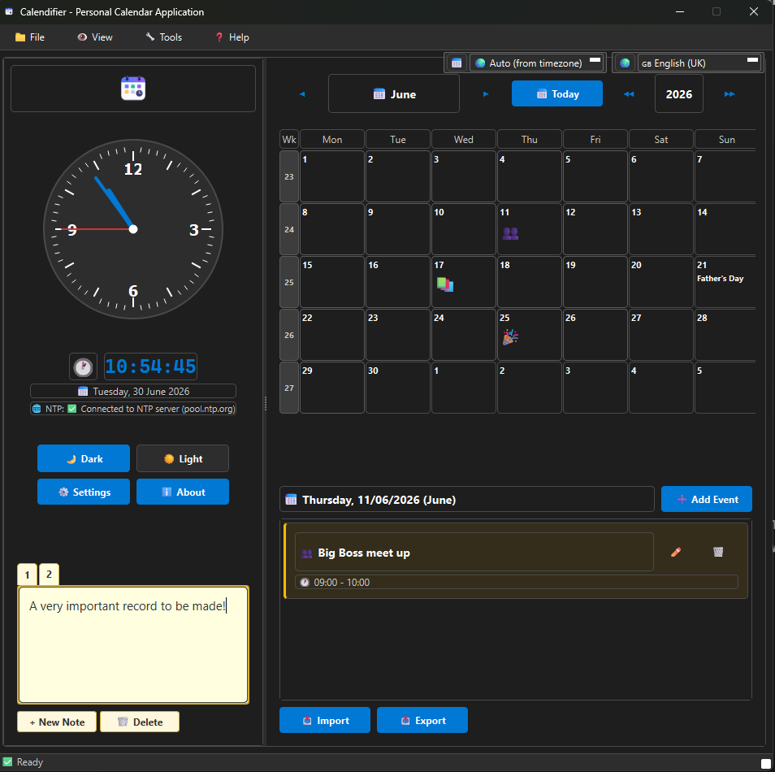

Calendifier
A local-first desktop calendar that speaks your language and knows your holidays. Public holidays and cultural observances for 40 countries, an analog clock, events and notes, in one clean interface.
Builds are published on the releases page as they ship.
A calendar that knows the whole world's dates
Calendifier brings international holidays, your own events and the time of day together, in your own language and on your own machine.
Holidays and observances
Far more than your own country's bank holidays.
- Public holidays for 40 countries
- Cultural observances on top of the official days
- Countries shown in their native names (Deutschland, 日本, Catalunya)
- Holiday region is independent of the interface language
Calendar, events and notes
The day-to-day, kept simple and predictable.
- Month calendar with your events and notes
- Recurring events via standard RRULE rules
- Notes kept in a clean sequential order
- Import and export so your data stays yours
Analog clock and accurate time
The time of day, shown well and kept correct.
- An analog clock that scales to its space
- Network time synchronisation
- Timezone-aware throughout
- Dark and light themes
Your languages, your machine
Internationalised to the core and local-first.
- 13+ languages with native number and date formatting
- Local SQLite storage, no account and no cloud
- An optional Home Assistant web dashboard
- Native installers for every platform
See it in action
The calendar, the world's holidays and the clock, in a clean themed interface.

Install on your platform
Grab a build from the releases page, or build from source with the development guide. A Home Assistant web dashboard is available for running it in your smart home.
Per-user installer
A graphical installer that needs no administrator rights, registers a normal uninstall entry and adds shortcuts.
CalendifierSetup.exe
Download for Windows
Disk image
A self-contained app bundle delivered as a drag-to-install disk image.
calendifier.dmg
Download for macOS
Flatpak
A Flatpak bundle for the KDE runtime that runs on any modern desktop.
flatpak install --user calendifier.flatpak
Download for Linux